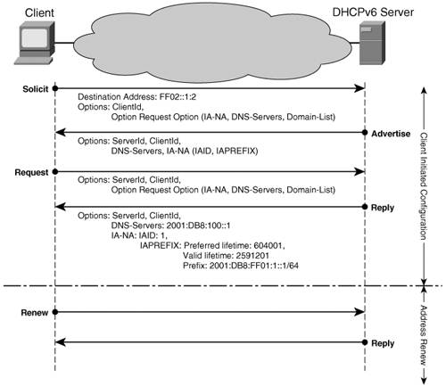
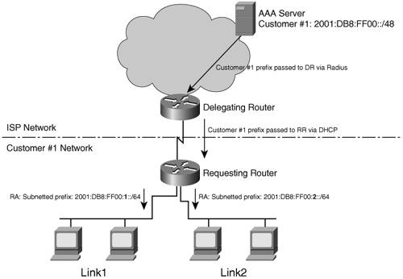
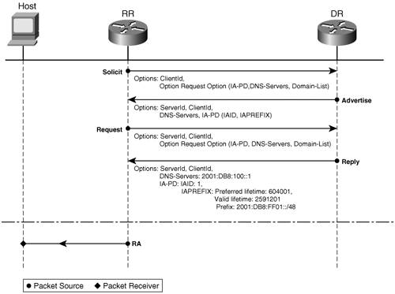

IPv6 ProvisioningTo gain IPv6 access and to benefit from IPv6 services, a node needs to be provided with the following information:
These three provisioning aspects are independent of whether the "IPv6 node" is a host or a customer router. The information, other than the IPv6 address, mentioned in the bulleted list and necessary for the proper operation of the node is commonly referred to as other configuration information. Host IPv6 Address ProvisioningProviding IP addresses to hosts is an important aspect of deploying IP-based services. Manual configuration is always an option; however, it is not scalable and it is not easily adaptable to addressing changes. For this reason, IPv4 most often relies on Dynamic Host Configuration Protocol (DHCP) for address provisioning. The same mechanism is available for IPv6; it is called stateful DHCP, and it is discussed later in this section. As more and more devices and appliances become IP enabled, it is likely that many of them will not have the resources to support complicated provisioning mechanisms. At the same time, the nature of some of these devices and appliances would require them to have plug-and-play capabilities. As a promoter of wider adoption of IP, IPv6 took this provisioning scenario into consideration and developed a simple autoconfiguration mechanism commonly referred to as stateless autoconfiguration. Stateless AutoconfigurationStateless autoconfiguration operation is described in RFC 2462, and it relies on the Neighbor Discovery Protocol (NDP) reviewed in Chapter 2, "An Ipv6 Refresher" It is a simple IPv6 address provisioning mechanism that can be used with any type of hosts. Stateless Autoconfiguration OperationIn the context of this provisioning mechanism, IPv6-capable hosts rely on Router Advertisement (RA) messages to obtain the information needed for autoconfiguration. To acquire an IPv6 address, a host will follow three steps:
By default, Cisco routers are sending RAs that can be used by hosts for stateless autoconfiguration. This functionality can be turned off for each router interface with the IOS command ipv6 nd suppress-ra. Other parameters relevant to this provisioning mechanism can be modified with the option available for the ipv6 nd command. IPv6 Address RenumberingAddress renumbering is a fact of life in any network. For various reasonssuch as network changes, user-distribution changes, and network mergersthe IP addressing scheme must be changed. This process can consume significant resources of the network operations team. For this reason, any mechanism that simplifies renumbering would prove valuable. In the case of IPv6, stateless autoconfiguration provides the means to advertise the deprecation of a prefix at a certain day and time and to advertise a new prefix from that moment onward. This is done through the interface configuration command ipv6 nd prefix <ipv6-prefix/prefix-length> at <valid-date-time> <preferred-date-time>. Note A router must have the means to track dates and time if it is using this renumbering mechanisms. Date and time can be set on the router or learned via NTP. At the time of this writing, NTP over IPv6 is not supported by Cisco products. On the other hand, if the routers are dual stack, they can leverage the IPv4 infrastructure to communicate with a clock source. The router advertises shorter and shorter lifetimes for the prefix as the date configured for its removal is approaching. Hosts on that link deprecate the prefix because of its lifetime expiration and learn a new prefix from the new router RAs. In the context of today's IPv6 address-allocation rules, an enterprise might have to perform renumbering every time it changes ISPs. Updating the IPv6 addresses is just one aspect of the complex process of renumbering. Network administrators also have to modify, for example, QoS policies, access control lists (ACLs), DNS entries, and so on. This explains the interest shown by the Internet Engineering Task Force (IETF) in evaluating the renumbering options of IPv6. An example of such work is "Procedures for Renumbering an IPv6 Network without a Flag Day," a draft in the IETF RFC editor's queue at the time of this writing. Stateful DHCPStateful DHCP is a client/server-based mechanism that provides managed provisioning of hosts. Its operation for IPv6 is described in RFC 3315. The value provided by DHCP consists in the fact that provisioning is done through a centralized resource. This resource is easier to manage than having to make changes on all customer-facing router interfaces in the case of stateless autoconfiguration. DHCP can offer a host not only the IPv6 prefix, but also other relevant information as well over the same message exchange. The disadvantage of using this provisioning mechanism is that it requires a more complex host implementation. Note At the time of this writing, stateful DHCP is not commonly available on IPv6 stacks. For this reason deployments favor the stateless autoconfiguration (for IPv6 prefix information) in combination with stateless DHCP (for other configuration information) rather than stateful DHCP. Cisco routers do not act as DHCP servers for IPv6 stateful autoconfiguration; however, the Cisco Network Registrar (CNR) can currently perform that function. Although conceptually similar, there are several differences between IPv4 DHCP and IPv6 DHCP:
Figure 3-1 shows the message exchange between a client and the DHCP server for both provisioning and renewal. The SOLICIT message sent by the client has the role of discovering a DHCP server. It is sent to the reserved, link-local scope multicast address FF02::1:2. In this example, the client requests a nontemporary address (IA-NA). The client selects a server from all the ones that replied with an ADVERTISE message, and it requests the information of interest (nontemporary address, DNS server address, and domain list). The server provides the information in a REPLY message. Figure 3-1. DHCPv6 Client-Server Message ExchangeNote For each IPv6 address received from the DHCPv6 server, the client performs Duplicate Address Detection. As far as the client is considered, the DHCPv6 server is located on the same link (this is the reason why it sends the SOLICIT message to a link-local scope multicast destination address). However, this is most often not the case. DHCP-based provisioning is done for all links from a centralized location, which means that the DHCP server is not on the same link as most hosts. When the DHCPv6 server is not on the same link with the client, the routers on the link must be configured to relay the client SOLICIT messages to the DHCP server. The interface configuration command for enabling this functionality is ipv6 dhcp relay destination <ipv6-address> <interface-type interface number>. If the unicast address of the DHCP server is known, the router is configured to forward the client messages directly to the server. Multiple DHCPv6 server addresses can be configured at the same time, in which case the router unicasts the client messages to each server. The router can also be configured to forward the client DHCPv6 messages to another DHCP relay router. If the address of the DHCP server is not known, the relay router can be configured, with the help of the interface command mentioned previously, to forward the client messages to the All-DHCP-Servers reserved multicast address FF05::1:3. By default, the Cisco router interface advertises the information necessary for stateless autoconfiguration. To make sure that attached hosts use only stateful DHCP for provisioning, you must configure the router interface with ipv6 nd managed-config-flag. In this case, the RAs inform hosts that they must use DHCPv6 to acquire provisioning information, including the IPv6 address. Note Stopping the router from transmitting RAs is not a practical option for forcing hosts to use stateful DHCP. On one hand, the host protocol stacks might not switch to stateful DHCP if they do not receive a reply to their router solicitations. On the other, this approach impacts the operation of other link-local functions such as router discovery. Router IPv6 Address Provisioning: Prefix DelegationPrefix delegation (PD) is a mechanism developed to provide automated delegation of IP address blocks. The delegation is done from an ISP to its customer. The ISP does not require any knowledge of the customer's internal network topology. In the IPv4 world, it is typical that the ISP only assigns a single address to the customer. Customers with more than one device are forced to use NAT. Static or long-lived address blocks are typically delegated manually. That is, when the service is ordered, the ISP informs the customer via e-mail or snail mail what the address block is. The customer then has to manually configure the network with the given network prefix. Not only is this approach error prone, it is also expensive. Because there is little reason to try to conserve address space for IPv6, it is expected that all users will be allocated a long-lived address block. Therefore, a scalable way of delegating address blocks is needed. The requirements for prefix delegation can be found in RFC 3769. Various PD proposals were made in the IETF. An initial proposal was made for a protocol based on Internet Control Message Protocol (ICMP). It soon became clear that the requirements and mechanisms suggested for prefix delegation would best be implemented based on DHCP. Address assignment does not, after all, differ greatly from PD. The existing DHCP messages and the DHCP address options were used as a template to create DHCP-based prefix delegation, described in RFC 3633. Protocol DescriptionThe PD protocol runs between a Customer Edge (CE) and a Provider Edge (PE) router. In PD terminology, the CE is called a Requesting Router (RR) and the PE router a Delegating Router (DR). The RR acts as the DHCP client, and requests prefixes from the DR (DHCP server). The DR verifies the authenticity and the profile of the RR with a AAA server, and that server provides the prefix. The DR injects a route into the provider's routing system for the delegated prefix on behalf of the RR. That way, a dynamic routing protocol between the RR and the DR is not needed; however, the RR and the DR must be directly connected. This restriction is comparable to DHCP, as described in RFC 3315, which allows DHCP relays in the path between the DHCP client and the DHCP server. Figure 3-2 shows this PD process. Figure 3-2. DHCP-PD ArchitectureFor a nondirectly connected CE-PE configuration, a DHCP relay option has been proposed. It provides enough information to the PE so that it can inject the route for the delegated prefix. Another alternative is to use a routing protocol between the CE and the PE. That is not as straightforward as it might first seem. One would need a mechanism to negotiate which of the many dynamic routing protocols to use (manual configuration isn't acceptable because it would defeat the purpose of a fully automated solution). Making the CE responsible for injecting routing information into the provider routing system might not be a good idea. It not only requires the customer to be able to configure their routers correctly, it also requires the provider to trust the customer not to be tempted to inject routes for prefixes not belonging to it. The latter case can be solved by applying route filters on the PE. Because that also requires explicit knowledge of the delegated prefix on the PE, it might as well also inject the route on behalf of the CE. The PE can also apply source-address validation on incoming traffic. A requesting router is identified by its DHCP Unique Identifier (DUID). This is an identifier created by the RR itself, or it can be manually configured based on information from the ISP. The DUID must be stored in stable storage so that is does not change (for example, after a reboot). DHCP-PD protocol message exchanges work just as DHCP address assignment. The RR (DHCP client) sends a SOLICIT message including PD options, and the DR (or DRs) on the link replies with an ADVERTISE message. The RR then sends a REQUEST, again with the PD option included, and the DR delegates the prefix and includes it in a REPLY message. Similar to DHCP, an Identity Association Prefix Delegation (IA-PD) is used by the client to indicate the scope of its request. The association is labeled with an identifier (IAID) that is used throughout the message exchange. Figure 3-3 shows the PD process. Figure 3-3. DHCP-PD Message ExchangeThe SOLICIT and ADVERTISE messages represent the process of the RR discovering DHCP-PD servers (DR). In cases where an RR can have access to at most one DR (as is the case of point-to-point uplinks), the discovery process can be eliminated and the four steps of negotiation can be shortened to two messages. This shortened process is called DHCP-PD Rapid Commit and it can be used only if the DR supports the DHCP Rapid Commit feature. In the case of Rapid Commit, the router provides the prefix in response to the SOLICIT. Each delegated prefix has an associated valid and preferred lifetime, which constitutes an agreement about the length of time over which the RR is allowed to use the prefix. An RR can request an extension of the lifetimes on a delegated prefix and is required to terminate the use of a delegated prefix if the valid lifetime of the prefix expires. When a prefix is about to expire, the RR sends a RENEW message. The delegating router replies with a REPLY message containing the prefix option with new lifetimes. During a network renumbering, the DR includes both the old and the new prefixes in the message. The old one has shorter lifetimes, and after some time, typically a few weeks, the old prefix expires, and only the new prefix is used. Other DHCP options might, of course, also be included in these messages. For example, DNS configuration options or Simple Network Time Protocol (SNTP) configuration options can be sent to the CE device. The CE device can run a stateless DHCP server on its downstream interfaces and relay these options to hosts on downstream links. Requesting RouterThe RR has to be configured to run DHCP-PD on its upstream interface (the interface facing the provider). The RR assigns a slice of the acquired prefix to each of its IPv6-enabled downstream links. The mechanism used for assigning the prefixes is called general prefixes. Example 3-1 shows an RR configuration. The CE has one upstream interface, Serial2/0, and two downstream interfaces, Ethernet0/0 and Ethernet1/0. Example 3-1. Configuration of a DHCP-PD RR
No manual configuration of the delegated prefix is required. The upstream interface is configured as a DHCP-PD client. The prefix (or prefixes) received via the PD protocol is given a name, genpfx-foo. The ipv6 address commands on the downstream interfaces refer to this named prefix when configuring their own addresses. The general prefix gives the first part of the prefix, and the address command provides the last part of the address. Let's assume a /48 prefix. The address specified in the address command is 0:0:0:1::1. The first 48 bits are being replaced by the prefix or prefixes received by DHCP. The next 16 bits are 0001, and the last 64 bits, the interface identifier, are set to ::1. It might be easier to see how this works with the following example. Example 3-2. General Prefix Acquired by a Router via DHCP-PD
As you can see, the prefix acquired with DHCP-PD is 2001:DB8:FF01::/48. The lifetime values of the prefix (valid, the amount of time the prefix is valid; preferred, the amount of time the valid prefix is preferred) are provided by the DR in the reply, as shown in Figure 3-3. Two /64 prefixes from the delegated /48 are assigned by the CE to its interfaces Ethernet0/0 and Ethernet1/0, as shown in Example 3-3. Example 3-3. Using the General Prefix to Provision Router Interfaces
Note that if two prefixes were delegated, that would result in two addresses on every Ethernet interface, each generated from the general prefix command based on the prefixes, and the information given in the address command. Both prefixes will be advertised in RAs sent out on the interface. The ipv6 address autoconfig default command on the upstream Serial2/0 interface uses stateless address autoconfiguration to configure a global address on the interface. The default keyword in this command leads to a default route being installed. The default route points out the configured interface and the next hop is the delegating router. Example 3-4 shows the result of this autoconfiguration process and the details of the routing table. Example 3-4. Stateless Autoconfiguration Process on Upstream Interface of CE Router
The output shows that a default route has been installed pointing to the DR. A /48 route toward the Null0 interface has been installed for the delegated prefix. This so-called black hole route makes sure that the RR has routing information for the entire delegated address block. Otherwise, it would forward traffic along the default route for parts of the /48 that are not configured on the CE yet. The DR has a routing entry for the /48 toward the CE, so without the black hole route, you would have a routing loop. The output of the show ipv6 dhcp interface command provides the information relevant to the DHCP client, as shown in Example 3-5. Example 3-5. DHCP-PD Client-Relevant Information on the Upstream Interface
The preceding output lists all the options received and the state of the DHCP protocol machine. If this output does not give enough information for troubleshooting, you can use the output of debug ipv6 dhcp to capture the dynamics of the delegating process. Delegating RouterHow does the DR get the larger address block from which it can delegate prefixes? There are several options:
Example 3-6 shows the configuration of a DR using a prefix pool. Example 3-6. Configuration of DHCP-PD Delegating Router Using Pool of Addresses
The configured DHCP pool is called pd-pool. Prefixes should be delegated from a local prefix pool named pfx-pool, and you should include the DNS attribute with the DNS server at 2001:DB8:100::1. A /40 prefix is reserved for the pfx-pool pool, and /48-sized chunks are delegated, as shown in the Example 3-7. Example 3-7. Prefix Assignment Form for the pfx-pool of a DHCP-PD DR
In the DR's Routing Information Base (RIB), the delegated prefix is inserted as a static route with a next hop being the RR's link-local address out Serial2/0 (as shown in the preceding example). The delegating server keeps state for each RR. This state is kept in a binding database that is shown in Example 3-8. Example 3-8. Binding Database of a DHCP-PD Server Router
What DHCP-PD Does Not DoDHCP-PD is designed to solve the simple case of delegating a prefix across the administrative boundary between a provider and a customer. It does not solve the problem of how the prefix information should be propagated within the site. Router autoconfiguration has been worked on in the IETF, but no solution has been agreed upon yet. Other Configuration InformationThe IETF spent a significant amount of time trying to reach a consensus on a mechanism for hosts to discover DNS servers without relying on "third-party" servers. The idea was that as long as the on-link router worked, and the DNS server worked, no further "configuration servers" should be needed. Because DHCP is one such third-party server, it was initially ruled out as a part of the solution. Many proposals where evaluated, among them was using the Service Location Protocol or DNS options in RAs or well-known site-local DNS addresses. As a reminder, this function is handled by DHCP for IPv4. Note Note that in an environment running both IPv4 and IPv6, also called a dual-stack environment, the configuration information acquired from IPv4 can also be used by IPv6. That is, the IPv6 stack can use recursive name servers with an IPv4 address to resolve names to IPv6 addresses. Stateless DHCPStateless DHCP, specified in RFC 3315, is the term used to describe a simplified DHCP message exchange where no state is required to be kept in the DHCP server. The DHCP server simply passes other configuration information on to the host. Note Network managers can configure routers to leverage the ICMPv6/Neighbor Discovery options, called M bit and O bit in RAs, to signal to a host that it should use a stateful (really meaning DHCP) service to configure addresses and acquire other configuration information. Nodes that use DHCP for address assignment will also obtain the other configuration information through the normal DHCP message exchange. Stateless DHCP is for nodes that do not use DHCP for address assignment (for example, stateless autoconfiguration or manual configuration). It is important to note that the options and messages used in stateless DHCP are the same as in "stateful" DHCP. There is no need for any special support for the stateless mode in the DHCP server or client. The simplified message exchange between the DHCP client and server goes as follows. The client sends an Information-REQUEST message to request configuration parameters, and the server replies with a REPLY message containing the configuration information. The interface configuration command ipv6 nd other-config-flag enables the router to indicate, through RAs, to attached hosts that they should use stateful DHCP to acquire provisioning information other than the IPv6 prefix. A router configured this way sets the OtherFlag field to 1 in its RAs, as shown in the output of show ipv6 routers on a neighboring router (Example 3-9). Example 3-9. Output of show ipv6 routers on a Neighbor to a Router Advertising an OtherFlag Value of 1
DNS ServicesThe Domain Name System (DNS) represents a resource and a mechanism that facilitate scalable deployments of IP services. It is a distributed database that stores name-to-IP address mapping information. This information helps users to identify the IP address of other hosts or network resources based solely on the name of their destination or vice versa. Name servers store the DNS data records, called Resource Records (RRs). There are of several types RRs):
The IP address-to-name mapping is resolved by hosts, also called resolvers, through queries sent to the NSs for the necessary RRs (see RFC 1035). To expand the DNS functionality to IPv6, three aspects of the process had to be considered):
AAAA RecordsTwo solutions were proposed for the first aspect of the DNS process: the AAAA record specified in RFC 3596; and the A6 record specified in RFC 2874, which is a super set of AAAA. The A6 could store records where the prefix portion of the address can be modified with no action from the administrators of the DNS zone. This could prove helpful when performing a network renumbering. On the other hand, the AAAA records are similar to the A records used in IPv4, and that makes them more palatable to network and service operators. The AAAA records are also optimal to be read by the Resolver, and they store the complete address (see RFC 3364). The IETF DNSEXT working group decided that the AAAA records are preferable for production deployments, whereas the A6 ones were moved to an experimental status. For more information on the AAAA versus A6 discussion, refer to RFC 3363 and RFC 3364. IP6.ARPA DomainSimilar to IPv4, a special domain is defined to find the host names that match an IPv6 address. In the case of IPv6, the root of this domain is IP6.ARPA; it was formerly IP6.INT. The record representing an IPv6 address is built by listing it as a set of dot-separated nibbles listed in reverse order terminated by .IP6.ARPA. Such a record is exemplified in Table 3-2 alongside an AAAA record.
Query Messages ChangesTo work in a dual-stack environment, the NS, Location of Services, and Mail Exchange query types have been modified. A DNS server replies to queries with both IPv4 and IPv6 information it holds (RFC 3596). In other words, when a dual-stack host queries an NS for the IP address corresponding to a given name, the reply contains an IPv4 and IPv6 address if both are in the RR. The node then selects the one it is interested in. All query messages can be transported in UDP or TCP on top of either IPv4 or IPv6, regardless of the IP version used in the request. IPv6-specific records can be transported over IPv4 and vice versa. Note The choices available in transporting the DNS queries can lead to problems under certain circumstances. If the local DNS server is IPv6 only and the root NS for the domain is IPv4, the name resolution is not possible because the host cannot reach the NS. Another example is that of a recursive search for the NS with a name's longest-match RR. The local DNS server resides in an IPv4-only network and climbs up the tree starting with the root NS. The queries are exchanged over IPv4. If the targeted NS is IPv6 only, the name resolution cannot take place. Deployment consistency and dual-stack DNS servers would avoid the problems described in this note. With the exception of the changes mentioned and described previously, the DNS functionality for IPv6 is similar to that of IPv4. The similarity resides in both implementation and in operation. For this reason, the functionality can be managed based on the experience gained with running IPv4 networks. |